39 works in progress; head and surface details remain unvalidated. See each note and the full gallery for the source photos and attribution.
Desert Horned Viper
Cerastes cerastesSandy reddish horned adult form; horns vary among individuals.
The viewed photographs do not establish ventral geometry or the opposite side; the horned form is one variant. Body pattern and tail taper are stylized; photographs are provider-identified, not expert verified. The shared open-S pose and procedural texture remain illustrative; this does not establish a calibrated or complete three-dimensional reconstruction.
Sahara Sand Viper
Cerastes viperaPale peach-sand form with low-contrast dorsal mottling; no prominent supraocular horns.
Photo showing underside is foreshortened; complete ventral pattern and opposite side remain unverified. No species-specific lateral head calibration; provider species labels have not been independently verified. The shared open-S pose and procedural texture remain illustrative; this does not establish a calibrated or complete three-dimensional reconstruction.
Godman's Montane Pit Viper
Cerrophidion godmaniBrown patterned individual with light-edged dark stripe behind eye.
Cerrophidion taxonomy and observation location require expert confirmation. Tail tip and underside are poorly visible in the close reference; body markings are an approximation. The shared open-S pose and procedural texture remain illustrative; this does not establish a calibrated or complete three-dimensional reconstruction.
Costa Rica Montane Pitviper
Cerrophidion sasaiBrown/gold-eyed individual with dark irregular body mottling and a pale-bordered eye stripe.
Grey and brown variants appear in the references; this is only one individual-style depiction. Ventral surface and precise opposite-side markings remain unverified. The shared open-S pose and procedural texture remain illustrative; this does not establish a calibrated or complete three-dimensional reconstruction.
Eastern Diamondback Rattlesnake
Crotalus adamanteus
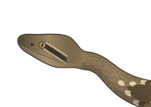
Heavy-bodied brown eastern diamondback with pale-edged dark dorsal diamonds and rattle.
Head and ventral reference views remain limited; species identity of citizen-science photos is not independently verified. The diamonds and tail bands are stylized, not individual-scale or segment reconstructions. Full body and head require an additional reference check; no numerical accuracy rating has been established.
Basilisk Rattlesnake
Crotalus basiliscusOlive-brown adult-style form; photographed individuals vary in pattern and tail coloration.
Dark tail shown in the selected reference; other individuals have visible dark bands on a lighter tail. Opposite side and underside not independently established; body motifs are procedural approximations. Further species-specific fitting and expert review are needed; the shared silhouette and regular motifs remain visibly stylized.
Northwestern Neotropical Rattlesnake
Crotalus culminatusMexican neotropical rattlesnake with dark paired neck stripes and pale-edged dorsal diamonds.
Two head views are the same observation; fine dorsal markings and underside remain uncertain. Head and body retain a related rattlesnake scaffold and need individual anatomical fitting.
Neotropical Rattlesnake
Crotalus durissus
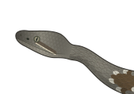
Dark gray individual-style variant with pale-bordered dorsal diamonds.
Dark photographic form is one variant; shape of the pale dorsal outlines and neck pattern are simplified. Opposite side and underside not independently established; body motifs are procedural approximations. Further species-specific fitting and expert review are needed; the shared silhouette and regular motifs remain visibly stylized.
Timber Rattlesnake
Crotalus horridus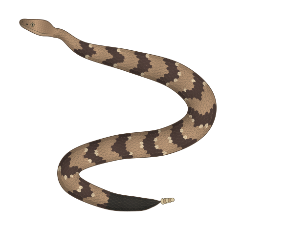

Brown timber rattlesnake variant with dark chevrons and dark tail.
Selected brown form does not represent all black and yellow color morphs; no independent ventral photo reviewed. Opposite side and underside not independently established; body motifs are procedural approximations. Further species-specific fitting and expert review are needed; the shared silhouette and regular motifs remain visibly stylized.
Western Rattlesnake
Crotalus oreganusTan and olive-brown individual with cream-edged dorsal blotches and a banded tail.
Western rattlesnake variation and taxonomy require geographic context; the modeled individual is illustrative. Opposite side and underside not independently established; body motifs are procedural approximations. Further species-specific fitting and expert review are needed; the shared silhouette and regular motifs remain visibly stylized.
Mexican Lancehead Rattlesnake
Crotalus polystictusMexican lance-headed rattlesnake with rows of dark oval spots.
Only two low-detail pilot photos; tail banding and head scutellation need additional reference photos. Head and body retain a related rattlesnake scaffold and need individual anatomical fitting.
Mojave Rattlesnake
Crotalus scutulatusOlive-sand Mohave form with dorsal diamonds and narrow black tail bands.
Viewed pilot photos do not resolve the head scales sufficiently; an institutional reference supports narrower dark tail bands. Head shape is adapted from a shared rattlesnake scaffold and needs further species-specific fitting; opposite side and underside unverified.
Central American Rattlesnake
Crotalus simusBrown Neotropical rattlesnake form with paired dark neck stripes, diamond pattern and dark tail.
The neck stripes are simplified and their full length is uncertain; species-complex taxonomy needs location-based checking. Head shape is adapted from a shared rattlesnake scaffold and needs further species-specific fitting; opposite side and underside unverified.
Tiger Rattlesnake
Crotalus tigrisPink-brown tiger rattlesnake with a relatively small head, narrow close crossbands and a large rattle.
The number and extent of crossbands are an artistic approximation, not a scale count; underside remains unreviewed. Head shape is adapted from a shared rattlesnake scaffold and needs further species-specific fitting; opposite side and underside unverified.
Yucatán Neotropical Rattlesnake
Crotalus tzabcanPale gray Yucatán form with dark angular lateral markings and a dark tail.
Dorsal diamond outlines remain regular and simplified; head detail is obstructed. Head shape is adapted from a shared rattlesnake scaffold and needs further species-specific fitting; opposite side and underside unverified.
Prairie Rattlesnake
Crotalus viridis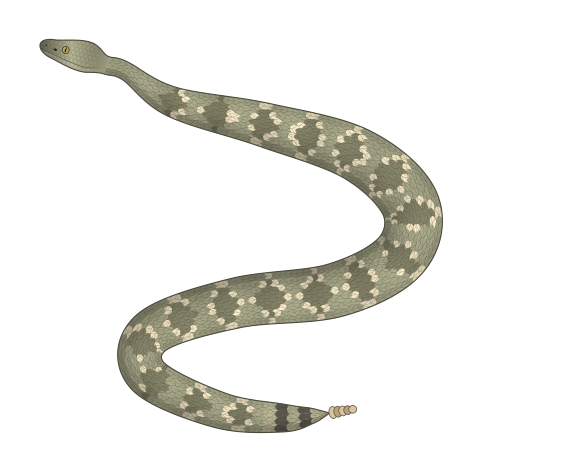
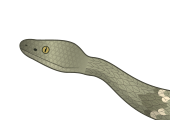
Muted olive-grey prairie rattlesnake form with dark dorsal blotches and a banded tail.
Pattern and coloration vary by individual; ventral pattern is not established by these selected photos. Head shape is adapted from a shared rattlesnake scaffold and needs further species-specific fitting; opposite side and underside unverified.
Cryptelytrops purpureomaculatus
Cryptelytrops purpureomaculatusDark purple-brown shore pit-viper variant with lighter scale flecks.
NCBI treats this source label as a synonym of Trimeresurus purpureomaculatus; do not count as an independently verified species. Shared pose and procedural texture remain approximations; no independent reconstruction of all sides.
Russell's Viper
Daboia russeliiWarm tan Russell’s viper with three rows of dark-edged brown oval spots.
Ocelli are simplified; the photo does not establish a complete underside pattern. Shared pose and procedural texture remain approximations; no independent reconstruction of all sides.
Siamese Russell's Viper
Daboia siamensis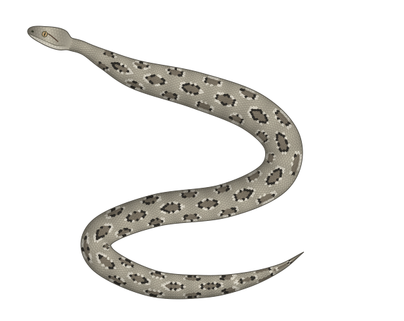
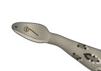
Grey eastern Russell’s viper form with dark-outlined ovals.
Head details are partly obscured; source labels and geographic identity require verification. Shared pose and procedural texture remain approximations; no independent reconstruction of all sides.
Chinese Moccasin
Deinagkistrodon acutusBrown hundred-pacer with broad head and alternating dark triangular flank markings.
Upturned snout and head scutes are not well resolved in the selected images; close healthy head references are needed. Shared pose and procedural texture remain approximations; no independent reconstruction of all sides.
Eastern Green Mamba
Dendroaspis angusticeps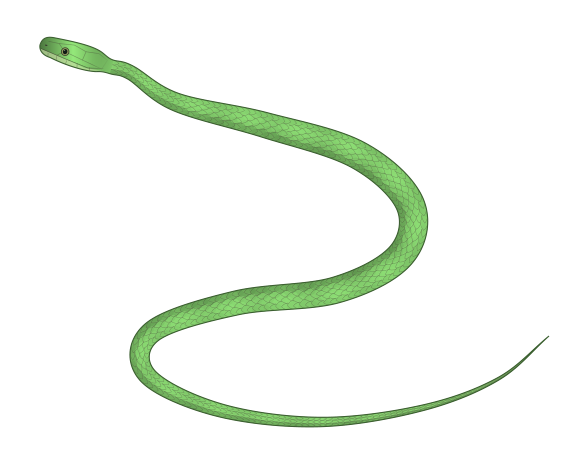

Bright green eastern green mamba with smooth scales, slim head and long taper.
Head adapted from a black-mamba scaffold and still needs close species-specific comparison; ventral markings remain uncertain. Shared pose and procedural texture remain approximations; no independent reconstruction of all sides.
Saw-scaled Viper
Echis carinatusBrown saw-scaled viper with rough scales and pale flank zigzags.
The sinuous flank zigzags are approximated with repeated chevrons; geographic variation and underside need further review. Shared pose and procedural texture remain approximations; no independent reconstruction of all sides.
Short-tailed Mamushi
Gloydius brevicaudus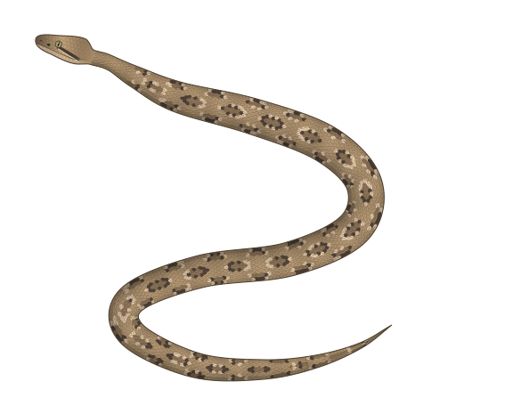
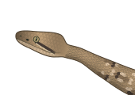
Short-tailed mamushi with dark-edged brown dorsal spots and a pale-edged dark cheek band.
The selected photos show limited ventral anatomy; the reference describes a dark belly, and a ventral view is still needed. Body pattern and scale layout remain approximate; all angles are not independently reconstructed.
Spine-bellied Sea Snake
Hydrophis curtusTan short sea snake form with dark crossbands and a paddle-shaped tail.
Head and opposite-side details remain poorly resolved; two selected images are the same observation. Head and paddle use an adapted marine scaffold; angle-specific geometry and scale counts remain unverified.
Yellow-bellied Sea Snake
Hydrophis platurus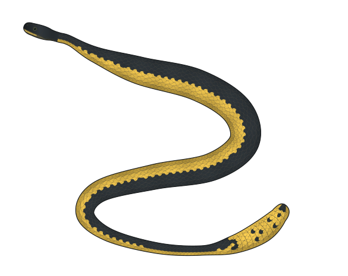

Yellow-bellied sea snake: dark dorsal body, yellow lower flank and spotted yellow paddle.
The oblique split color and paddle spotting are schematic, not a full lateral or ventral reconstruction. Head and paddle use an adapted marine scaffold; angle-specific geometry and scale counts remain unverified.
Beaked Sea Snake
Hydrophis schistosus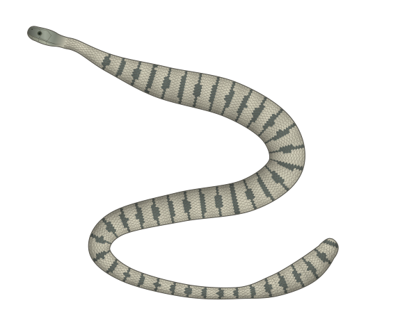

Gray-olive beaked sea snake with pale interspaces and paddle-shaped tail.
The characteristic beaked snout is not yet fitted from a sufficiently detailed healthy head reference. Head and paddle use an adapted marine scaffold; angle-specific geometry and scale counts remain unverified.
Hump-nosed Viper
Hypnale hypnale
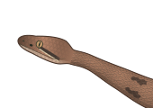
Brown hump-nosed pit viper with paired dark body marks and a pale facial stripe.
Do not infer a raised snout from the common name or an upward-pointing pose; the cited diagnosis says the snout tip is not raised. Body pattern and scale layout remain approximate; all angles are not independently reconstructed.
Chocoan bushmaster
Lachesis acrochordaBrown Chocó bushmaster with dark-edged angular body markings.
Two photos share an observation; complex head markings and spine-tipped tail need further fitting. This head and body adapt a shared viper scaffold; opposite side and underside are not independently modeled.
Black-headed Bushmaster
Lachesis melanocephala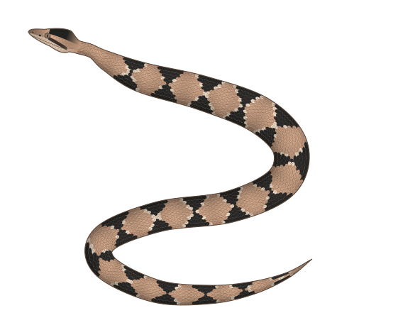

Black-headed bushmaster with a dark cap, pale lower head, and contrasting body markings.
Both pilot images are from one observation; the body and rear of the head are partly obstructed. This head and body adapt a shared viper scaffold; opposite side and underside are not independently modeled.
South American Bushmaster
Lachesis mutaAmazonian bushmaster with strongly keeled scales and dark angular body markings.
Complex flank motifs and tiny terminal tail spine are simplified; exact proportions need further review. This head and body adapt a shared viper scaffold; opposite side and underside are not independently modeled.
Central American Bushmaster
Lachesis stenophrys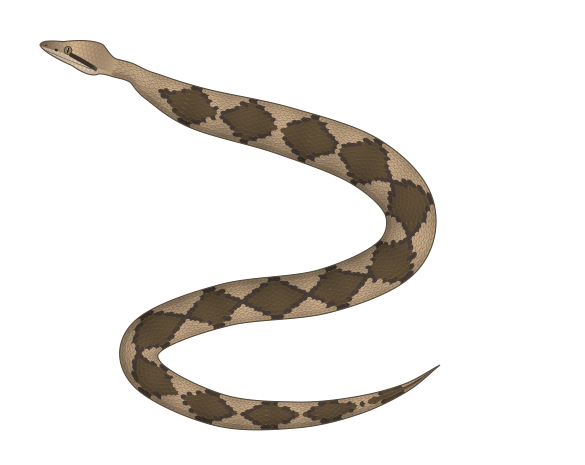

Central American bushmaster with brown skin, dark rhomboid markings, and pale jaw.
Only the head is shown in the pilot folder; body pattern and pointed tail are guided by the institutional description. This head and body adapt a shared viper scaffold; opposite side and underside are not independently modeled.
Yellow-lipped Sea Krait
Laticauda colubrinaYellow-lipped sea krait with blue-gray skin, dark rings and flattened tail.
Selected underwater images give only limited head and underside detail; the yellow lip is a simplified marker. Head and paddle use an adapted marine scaffold; angle-specific geometry and scale counts remain unverified.
Forest Cobra
Naja melanoleuca
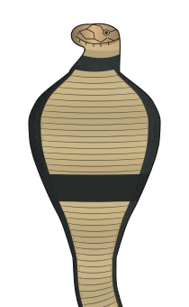
Black forest-cobra form with a cream throat and broad dark band.
The expanded hood photos are the same individual. The forest-cobra complex and locality require taxonomic checking; other color forms exist. Head and hood use a shared cobra scaffold and require detailed species-specific anatomical comparison. The oblique procedural head still differs from the frontal head in the selected photograph; separate-angle fitting is needed.
Red Spitting Cobra
Naja pallidaSalmon-red red spitting cobra form with a broad dark throat band.
Both pilot images are from one observation and do not show hood or head details clearly; throat band is guided by the external species description. Head and hood use a shared cobra scaffold and require detailed species-specific anatomical comparison. The current generic head is visibly stylized; a reliable expanded-hood photograph is still needed.
Asp
Vipera aspis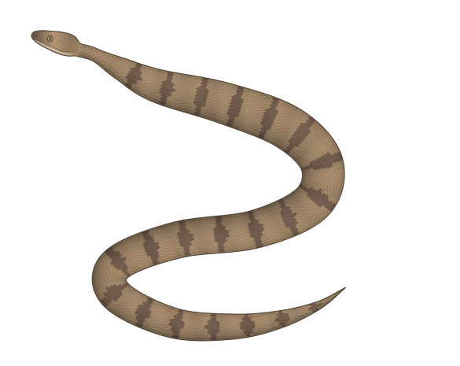
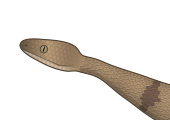
Brown asp viper with muted broken dark crossbars.
The slightly upturned snout is not yet reliably fitted from a clear lateral reference. Head and body use an adapted viper scaffold; opposite side, underside, and exact shape need further fitting.
Adder
Vipera berusBrown common adder with a dark dorsal zigzag and red-brown iris.
Dark zigzag is an approximation and melanistic individuals also occur; identity cannot be established by color alone. Head and body use an adapted viper scaffold; opposite side, underside, and exact shape need further fitting. Characteristic dorsal head marking and side spots are not yet represented.
Nikolsky's Viper
Vipera nikolskii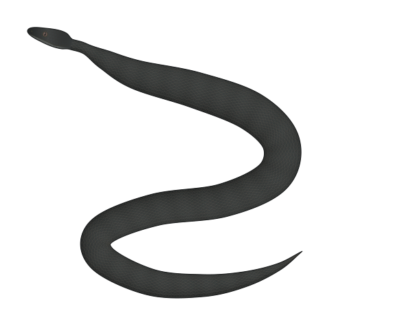
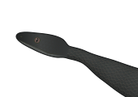
Dark adult Nikolsky’s viper form with keeled scales.
Some common adders are also dark; the black palette alone is not diagnostic and species-complex taxonomy requires review. Head and body use an adapted viper scaffold; opposite side, underside, and exact shape need further fitting.
Vipera renardii
Vipera renardiiGrey-brown steppe-viper form with dark dorsal zigzag and pale lip.
The source label spelling and taxonomic relationship with meadow vipers require explicit geographic and taxonomic reconciliation. Head and body use an adapted viper scaffold; opposite side, underside, and exact shape need further fitting.
Meadow Viper
Vipera ursinii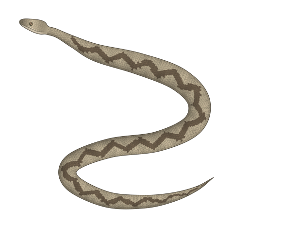
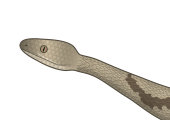
Pale meadow viper with a dark dorsal stripe or zigzag.
Pattern varies: the continuous zigzag is a simplified approximation of the longitudinal pattern shown in the chosen image. Head and body use an adapted viper scaffold; opposite side, underside, and exact shape need further fitting.